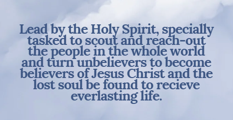

MISSION

"Let the Word of God be the light that guides your path each day. In every verse, find strength, hope, and the promise of His unfailing love."
📖 Psalm 119:105 — “Your word is a lamp to my feet and a light to my path.”
📖 Philippians 4:6 — “Do not be anxious about anything, but in every situation, by prayer and petition, with thanksgiving, present your requests to God.”
📖 Jeremiah 29:11 — “‘For I know the plans I have for you,’ declares the Lord, ‘plans to prosper you and not to harm you, plans to give you hope and a future.’”
📖 Matthew 6:33 — “But seek first his kingdom and his righteousness, and all these things will be given to you as well.”
📖 Proverbs 3:5 — “Trust in the Lord with all your heart and lean not on your own understanding.”
📖 Isaiah 41:10 — “So do not fear, for I am with you; do not be dismayed, for I am your God. I will strengthen you and help you; I will uphold you with my righteous right hand.”
📖 Nehemiah 8:10 — “Do not grieve, for the joy of the Lord is your strength.”
📖 Philippians 4:13 — “I can do all things through Christ who strengthens me.”